[arXiv'25] TurboQuant: Online Vector Quantization with Near-optimal Distortion Rate 论文阅读
作者来自 Google Research、Google DeepMind 和 NYU。
#摘要
向量量化（Vector Quantization, VQ）源于 Shannon 的信源编码理论，其目标是在尽量减小几何结构失真的前提下，对高维欧氏向量进行量化。我们提出 TurboQuant，同时处理均方误差（MSE）失真和内积失真，克服了现有方法无法达到最优失真率的局限。我们的算法是数据无关（data-oblivious）的，因此适用于在线场景；并且在所有比特宽度和维度下都能达到近最优失真率（与理论最优只差一个很小的常数因子）。
TurboQuant 的核心思想是：先对输入向量施加随机旋转，使各坐标呈现集中化的 Beta 分布；再利用高维空间中不同坐标之间的近独立性质，对每个坐标分别应用最优标量量化器。进一步地，我们注意到：对 MSE 最优的量化器在估计内积时会引入偏差。因此，我们提出一个两阶段方案：先施加 MSE 量化器，再对残差施加一个 1-bit 的 Quantized JL (QJL) 变换，从而构造出一个无偏的内积量化器。
我们还正式证明了任意向量量化器所能达到的最佳失真率的信息论下界，并表明 TurboQuant 与该下界仅相差一个很小的常数因子（约为 2.7）。实验结果验证了理论结论：在 KV cache 量化中，我们在 每通道 3.5 bit 时实现了完全无质量损失，在 2.5 bit 时也仅有轻微质量下降；此外，在最近邻搜索任务中，我们的方法在召回率上优于现有积量化方法，同时几乎将索引构建时间降为零。
#1. 引言
欧氏空间中的向量量化（VQ）对于高效处理高维向量至关重要，应用场景广泛，包括大规模 AI / 深度学习模型的训练与部署，以及向量数据库中的搜索与检索系统。其核心目标是：通过量化对高维向量进行压缩——也就是把浮点坐标值转换为低比特宽度整数——同时尽可能减小失真（Distortion）。常见的失真度量包括均方误差（MSE）以及内积误差。
只要能较好地保留这些性质，就能够在更低的延迟、更少的计算与通信资源下，快速回答内积查询。
该问题可以追溯到 Shannon 关于信源编码理论的奠基性工作，它表明块编码（今天可视为向量量化器）所能达到的最小失真，由著名的 Shannon 失真-码率函数所决定，该函数依赖于信源的统计性质以及所选择的失真度量（例如 MSE）。如今，VQ 已经成为 AI、深度学习与搜索系统中的基础技术。
VQ 的一个关键应用是在 AI 模型，尤其是大型语言模型（LLM）的部署中。 LLM 的能力往往强依赖于模型规模与上下文长度，因此在服务时需要巨大的内存，并伴随着较高的推理延迟。这些延迟主要来自加速器内部 HBM 与 SRAM 间的数据通信瓶颈，或者分布式集群中的跨节点通信。
通过压缩或量化模型权重和激活值，可以有效缓解这些瓶颈，从而显著降低推理成本。深度学习模型的核心操作之一就是激活与权重之间的内积，因此模型量化方案的目标就是在压缩权重和/或激活向量的同时，尽量准确地保留这些内积。
解码器式 Transformer 模型是另一个非常重要的应用场景。这类模型需要在 KV cache 中保存先前生成 token 的 key/value 嵌入，而 KV cache 的大小会随模型规模（层数、注意力头数）和上下文长度同时增长。这会成为内存占用和计算速度上的主要瓶颈，尤其对于长上下文模型更为严重。
因此，在不损害准确率的前提下减小 KV cache 非常关键。在这一背景下，保留嵌入向量的欧氏结构——尤其是它们的内积与距离——对于维持模型性能至关重要。 VQ 正是解决这一问题最自然的框架，因为它能够在压缩高维嵌入的同时，尽量保留其关键几何性质。
此外，高维空间中的最近邻（NN）搜索，尤其是基于内积或余弦相似度的搜索，是向量数据库的基石。向量数据库在检索增强生成（RAG）和信息检索中都非常基础。这里的 VQ（在近邻搜索文献中通常也称 Product Quantization, PQ）扮演重要角色：它可以压缩数据库向量、降低内存占用，并支持对查询向量与数据库向量间内积的快速而准确的估计，从而实现低延迟且高精度的最近邻搜索。
现有 VQ 算法通常存在一种权衡：
- 要么不兼容加速器/向量化、计算速度慢，因此不适合像 KV cache 量化这类实时 AI 场景；
- 要么其失真界相对于比特宽度来说不够理想。
本文的目标就是设计一种算法，克服上述局限。具体来说，我们提出 TurboQuant：
- 轻量；
- 支持在线应用（例如在线 KV cache 量化）；
不需要针对当前数据集做训练、校准、学习 codebook，拿到一个向量就能立刻量化；
- 对现代 AI 工作负载高度友好，尤其适合加速器执行。
TurboQuant 的核心是一个两阶段过程：
- 首先设计一个在 MSE 意义下最优 的向量量化器；
- 然后对残差施加一个 1-bit 量化器，从而得到一个无偏且低失真的内积量化器。
我们证明：仅对 MSE 最优的量化器并不能提供无偏的内积估计，而这个两阶段方案能有效弥补这一缺陷。
每次量化后算出来的内积估计值会有噪声/随机波动；但所有波动平均起来不系统性偏大，也不系统性偏小。
我们的 MSE 最优量化器首先对输入的 d 维向量施加随机旋转。注意到旋转后各坐标服从 Beta 分布，于是我们通过求解连续型 1 维 k-means 问题，为每个坐标构造最优的 Lloyd-Max 量化器。该方法能在 MSE 意义下得到最优失真界，并最小化残差的 L2 范数。
为了获得无偏且低失真的内积量化器，我们把该量化器与最近提出的 Quantized Johnson-Lindenstrauss (QJL) 变换结合起来； QJL 会把残差向量的每个坐标量化为单比特。我们的算法在 MSE 和内积两种度量下都提供可证明接近最优的失真界，并且相对于已有方法，在比特宽度依赖上实现了指数级改进。
#1.1. 问题定义
形式化地说，我们希望设计一个量化映射：
把 维向量编码为长度为 的二进制串。
若令，其中，则称该量化器的比特宽度为，表示对每个实值坐标平均分配的比特数。
同时，我们需要一个逆映射：
用于解量化，也就是从量化表示中近似重建原向量。由于 不可能是双射，这一过程必然有损，因此我们的核心目标就是最小化失真。本文主要关注两类失真：
- 均方误差（MSE）
- 内积误差
我们对输入数据集不做任何分布假设，而考虑最坏情形。同时允许量化器 是随机化的，因此输出是随机变量。在这种情况下，更合理的失真定义应当是对量化器随机性的期望。
因此，对于任意给定比特宽度，我们希望设计量化器，使得对任意（最坏情形）向量，以下期望失真尽可能小：
#1.1.1. MSE 失真
#1.1.2. 内积误差
其中期望是对量化器的随机性取的。此外，对于内积量化器，我们还要求无偏性，即：
#1.1.3. 无偏性
我们希望设计计算高效的量化器 和，在任意给定比特宽度下达到尽量优的失真界，并要求 给出无偏的内积估计。
更具体地说，设有 个实值向量。我们需要以下两个基本操作：
Quant：高效地量化整个数据集，计算；DeQuant：给定量化后的数据，能够高效重建对应原向量的近似值，也就是计算。
#1.2. 相关工作
#1.2.1. 向量量化的起源
向量量化理论始于 Shannon 关于可达失真-码率函数的经典工作。 1963 年，Zador 使用高分辨率方法推导了固定码率量化在高码率极限下的运行失真-码率函数，该结果与 Shannon 的失真-码率函数高度接近。不过，Zador 并未着重讨论可实现算法。
随后，Gersho 的著名工作进一步推动了向量量化的发展：推广了高分辨率理论、简化了 Zador 的结果、引入了晶格向量量化，并提出了影响深远的著名猜想。尽管理论进展显著，但在早期，VQ 的实际可用性并不明朗，因为最直接的编码方式——暴力最近邻搜索——计算代价太高，限制了其实际采用。
#1.2.2. 在线量化 vs 离线量化
在线（data-oblivious）量化方法可以立即应用，不需要针对数据做特定调优或校准，因此非常适合在线应用。相对地，离线（data-dependent）量化方法需要大量预处理和训练，来让量化映射适应数据，因此不适合动态数据场景。
例如，一些方法利用二阶信息（如 Hessian）来调整量化映射，这通常需要重预处理，甚至还要配合后处理。
#1.2.3. 在线 KV Cache 压缩
已经有许多方法试图压缩 KV cache：
- 一类方法通过修改模型结构本身，减少需要保留的 key-value 对数量；
- 另一类方法通过剪枝或驱逐不重要 token；
- 还有一种简单有效的方式是直接对 KV cache 做量化。
针对 KV cache 的量化方法已经有不少，例如 KIVI、KVQuant、Lexico、PolarQuant 等。最近提出的 QJL 则是一个高效、数据无关、1-bit 的量化方法，基于 sketching 技术，并且能提供无偏内积估计。本文在内积优化量化器中正是利用了这一技术。
#1.2.4. Product Quantization (PQ)
在高维欧氏空间的近邻搜索中，索引大小往往构成主要内存瓶颈，而 PQ 是缓解这一问题的经典手段。许多 PQ 算法依赖于在索引构建阶段使用 k-means 或其变体来学习量化码本，因此由于预处理代价太高，并不适合在线场景。
最近有工作提出了一种基于网格的 PQ 方法，避免了训练过程。其做法是把均匀网格投影到单位球面上，再通过搜索找到离数据点最近的投影点。虽然这类方法的实践效果不错，但其理论保证较弱；而且它依赖网格投影和二分搜索，计算较慢，也不适合 GPU 等加速器，因为缺乏天然向量化结构。
#1.3. 技术概览与主要贡献
我们的第一个 VQ 算法以最小化 MSE 为目标。核心做法是：对输入向量施加随机旋转，从而使每个坐标在不依赖输入数据的情况下都服从 Beta 分布。
在高维 下，由于测度集中和中心极限定理，每个坐标分布会趋近于高斯分布。更重要的是，不同坐标之间不仅几乎不相关，而且近似独立。这个近独立性质使我们可以忽略坐标间的相互作用，直接对每个坐标施加最优标量量化器，而依然能达到近最优失真。
在高维空间中， 维随机单位向量的每一维坐标会服从高斯分布。
高斯分布 的概率密度函数为：。
推导：取 个独立高斯一维随机变量，令，那么 就是 维空间中的随机单位向量。
我们通过求解连续 1 维 k-means 问题，使用 Max-Lloyd 算法为 Beta 分布构造最优标量量化器。对于一组实用的比特宽度，我们会预先离线求出这些最优码本，并存储起来，以支持后续高效调用。
给你一堆数值，想用 个代表点 去近似它们，使得每个数到最近代表点的 MSE 最小。
如果输入不是离散的，而是来自一个连续概率分布 的随机变量，那目标就不再是最小化 MSE，而是最小化数学期望
标量量化本质上就是：把实数轴切成 段，每段用一个重建值表示，让 MSE 最小。与 k-means 是相同的数学问题。
Lloyd–Max 算法是求解连续型 k-means 问题的经典方法，迭代优化代表点的位置和分割点的位置，直到收敛。
论文证明：对于任意单位范数向量，-bit 的 MSE 优化 TurboQuant 满足：
- 一般失真上界：
- 对小比特宽度，界还可进一步细化：
- 时，约为 0.36
- 时，约为 0.117
- 时，约为 0.03
- 时，约为 0.009
单位范数假设并不严格：对于任意范数的数据集，只需额外存储向量的 L2 范数，并在解量化时重新缩放即可。
我们证明：MSE 最优量化器在内积估计时是有偏的，因此需要另一种 VQ 方案，来实现无偏内积估计。
为此，我们提出一个两阶段算法：
先使用一个比目标预算少 1 bit 的；
再对残差施加 QJL。
这样构造出的 是无偏的，并且内积误差也接近最优。论文证明：对于任意单位向量 和任意查询向量，有：
- 无偏性：
- 内积失真上界：
- 对小比特宽度，细化结果为：
- ：约为
- ：约为
- ：约为
- ：约为
我们还证明：对于任意随机化量化算法，总存在困难输入实例，使得：
- MSE 至少为
- 内积误差至少为
因此，TurboQuant 在 MSE 意义下与信息论下界至多差一个
的常数因子。对于小比特宽度，这个常数更小。例如当 时，TurboQuant 只比最优解差大约 1.45 倍。
实验上，本文验证了理论失真界，并表明：
在各种真实数据集上，TurboQuant 的失真非常贴近理论预测，且接近下界；
在 Needle-in-a-Haystack 和 LongBench 等长上下文任务中，TurboQuant 能在 超过 5× 压缩 KV cache 的同时仍保持很高性能；
在高维近邻搜索中，TurboQuant 持续优于数据依赖的 PQ 方法，同时索引构建时间几乎为零。
#2. 预备知识
本文使用粗体小写字母（如）表示向量，粗体大写字母（如）表示矩阵。向量切片记作；矩阵第 i 行记为，也简写为。
记 为 中半径为 1 的单位超球面。对随机变量，其微分熵记为；对随机变量，互信息记为
由于 TurboQuant 通过随机旋转来规避最坏输入情形，因此理解单位球面上随机点的统计性质非常关键。
引理 1：单位球面随机点的坐标分布
若 在单位球面上均匀分布，则任意坐标 服从如下（缩放/平移后的）Beta 分布：
当维度足够高时，该 Beta 分布会收敛到正态分布。
这一点非常关键：它让原本复杂的向量量化问题，在随机旋转后变成了一个对已知标量分布做最优量化的问题。
#2.1. 量化失真下的香农下界
Shannon Lower Bound（SLB）是从有损压缩理论中导出的通用下界，用于刻画任意有损压缩方案在给定码率下所能达到的最佳 MSE。
引理 2（SLB）
设随机向量 服从任意分布，且微分熵有限。定义总比特复杂度为 时的 MSE 失真-码率函数：
则有：
引理 3（超球面上的随机点的 SLB）
如果 在单位球面 上均匀分布，那么失真下界可以写成更简洁的形式：
若设，则得到：
这就为本文后续的最优性分析提供了一个统一基准。
#2.2. QJL：1-bit 内积量化
正如前文所说，我们设计了两个量化器：
- 一个优化 MSE；
- 一个优化内积误差。
我们会证明：MSE 最优量化器通常并不能给出无偏的内积估计，尤其在低比特宽度下偏差明显。因此，我们对内积量化采用两阶段策略：
- 用少 1 bit 的 MSE 最优量化器先减小残差的 L2 范数；
- 再使用一个无偏、1-bit、最优的内积量化器来量化残差。
这里使用的单比特内积量化器就是 QJL。
#2.3.1 QJL 定义
对任意正整数 d，QJL 映射定义为：
其中 的每个元素独立采样自，sign 按坐标逐项作用。
对应的解量化映射为：
引理 4（性能保证：QJL）
对于任意单位向量 和任意查询向量，QJL 满足：
- 无偏性：
- 方差上界：
这个性质使它非常适合作为残差的补偿器。
#3. TurboQuant：高性能量化
本文开发了两个 VQ 算法：
一个用于最小化原向量与重建向量之间的 MSE；
一个用于无偏内积估计，修正前者对内积估计的偏差。
同时，我们还证明了任意量化器所能达到的失真下界，说明 TurboQuant 在整个比特宽度范围上都接近最优。
#3.1. MSE 最优的 TurboQuant
设 是单位球面上的最坏情形输入向量。我们的目标是将其量化为每个坐标 bit，并最小化重建 MSE。
生成一个随机旋转矩阵；
计算旋转后的向量：
此时 在单位球面上均匀分布；根据前述引理，其每个坐标都服从 Beta 分布，并在高维下近似高斯；
利用坐标近独立性，对每个坐标独立做最优标量量化；
最后再通过 旋转回原坐标系。
#3.1.1. 标量量化问题
我们把区间 划分为 个 bucket，并寻找最优质心，使得连续型 1D k-means 目标最小：
这就是 Lloyd-Max 型的连续最优标量量化问题。论文做法是：对一系列常用 b 值预先数值求解并缓存结果。
在中等高维下， 已很接近高斯分布，因此例如：
- 当 时，最优质心近似为
- 当 时，近似为
#3.1.2. 算法伪代码（文字版）
#Quant_mse(x)
- 输入：维度 d、比特宽度 b、向量 x
- 计算
- 对每个坐标，找到最近的质心下标：
- 输出全部下标向量 idx
#DeQuant_mse(idx)
- 根据每个下标取回对应质心，得到
- 计算
- 输出重建向量
#3.1.3. 性能保证
论文证明，对任意 和任意单位向量，重建向量 满足：
- 一般 MSE 上界：
- 小比特宽度时的更精细结果：
- ：
- ：
- ：
- ：
其证明要点是：旋转不改变欧氏范数，因此整体 MSE 等于各坐标独立量化误差之和；而每个坐标的误差就是上述连续型 k-means 目标值。
对高比特宽度，论文使用 Panter-Dite 高分辨率公式得到：
码字索引的熵编码
TurboQuant 还可以进一步通过对“最近码本元素的索引”做熵编码来提升压缩效率。若第 个码字的出现概率为
那么最优编码后，平均比特宽度可以接近分布 的熵值。这种无损压缩不会影响失真，只会进一步减小存储开销。
论文指出：收益最大的情形大约出现在 时，此时平均比特宽度可以降低约 5%。但由于收益有限，为了保持实现简单和高速，作者最终没有把该技巧集成进 TurboQuant 主设计中。
#3.2. 面向内积的 TurboQuant
对于最近邻搜索等任务，无偏的内积估计非常重要。但前述的 并不满足这一点。
#3.2.1. 为什么 MSE 最优量化器会有偏？
考虑 的情况。在维度足够大时，最优码本接近：
于是量化映射近似为：
解量化映射为：
由此可以推出，对于足够大的 d，有：
也就是说，它存在一个 的乘性偏差。随着 b 增大，这种偏差会减小，但低比特宽度时非常明显。
#3.2.2. 两阶段修正方案
为了解决这个偏差问题，作者提出：
先使用一个 bit-width 为 的 MSE 优化 TurboQuant；
设残差为
再对残差施加 QJL；
输出 MSE 重建项与 QJL 残差补偿项之和。
于是整体内积估计器为：
#3.2.3. 形式化定义
量化映射定义为：
也就是说，量化结果包含三部分：
MSE 阶段的索引向量；
残差的 QJL 符号向量；
残差范数。
#3.2.4. 算法伪代码（文字版）
#Quant_prod(x)
- 用 bit-width 为 的 得到 idx
- 计算残差：
- 计算 QJL 签名：
- 输出：
#DeQuant_prod(idx, qjl, \gamma)
- 先恢复 MSE 部分：
- 再恢复 QJL 残差项：
- 最终输出：
#3.2.5. 理论保证
对任意、任意单位向量，以及任意查询向量，论文证明：
- 无偏性：
- 内积失真上界：
- 小比特宽度的精细值：
- :
- :
- :
- :
其证明核心在于：条件在 MSE 阶段固定后，QJL 对残差提供的是一个无偏估计，其方差与残差范数平方成正比；而残差范数又恰好由 MSE 阶段控制。
#3.3. 下界：最佳可达压缩失真
作者进一步证明：TurboQuant 的失真率在信息论意义下几乎已经不能再显著改进。
#3.3.1. 定理
对于任意随机量化算法
及任意重建映射，总存在某个困难输入实例，使得：
并且还存在某个，使得：
#3.3.2. 证明思路
证明使用了两个标准工具：
Yao 的极小极大原理：把“随机算法在最坏输入上的性能下界”转化为“确定性算法在某个随机输入分布上的性能下界”；
Shannon Lower Bound：对该随机输入分布给出任何有损压缩方案都无法突破的理论下界。
因此，TurboQuant 的理论上界与这一不可突破下界之间只相差一个小常数因子。
作者还提到：若考虑最坏情形失真，也可以通过 sphere packing 方法得到相近的下界，甚至常数会更大；但本文采用的下界更贴近其分析目标，因为它约束的是期望失真，和上界形式严格对齐。
#4. 实验
所有实验都在单张 NVIDIA A100 GPU 上完成。实验分为两部分：
实证验证理论结果；
下游任务评测，包括 KV cache 量化与最近邻搜索。
#4.1. 实证验证
作者使用 DBpedia Entities 数据集，并通过 OpenAI3 embedding 编码到 1536 维空间中。实验从中随机抽取 100,000 个样本作为训练集合，另取 1,000 个不同样本作为查询集合。
主要评估两个方法：
：针对内积估计无偏优化；
：针对重建 MSE 优化。
结果观察
随着比特宽度增大，两种方法的误差方差都会下降；
但在内积估计场景下， 会引入偏差；
这种偏差会随着 bit 增加逐渐减小并最终接近 0；
而 在所有 bit 宽下都保持无偏。
当量化到 2 bit 时，实验还观察到：
对于，内积误差方差与原始向量间的平均内积几乎无关；
对于，偏差会随着平均内积增大而增大。
此外，作者还绘制了不同 bit ratio 下的平均内积误差与 MSE，并与理论上下界对比，结果表明实验曲线与理论预测高度一致：
在低 bit 区间， 在内积估计上更优；
当 bit 增加时， 的偏差消失，并最终在内积估计任务上也能表现更好。
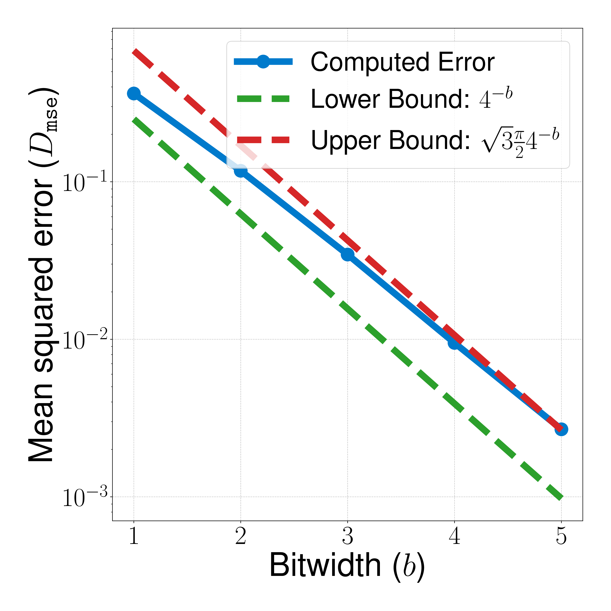
图 1：TurboQuant 在 MSE 失真上的实验结果与理论上下界对比。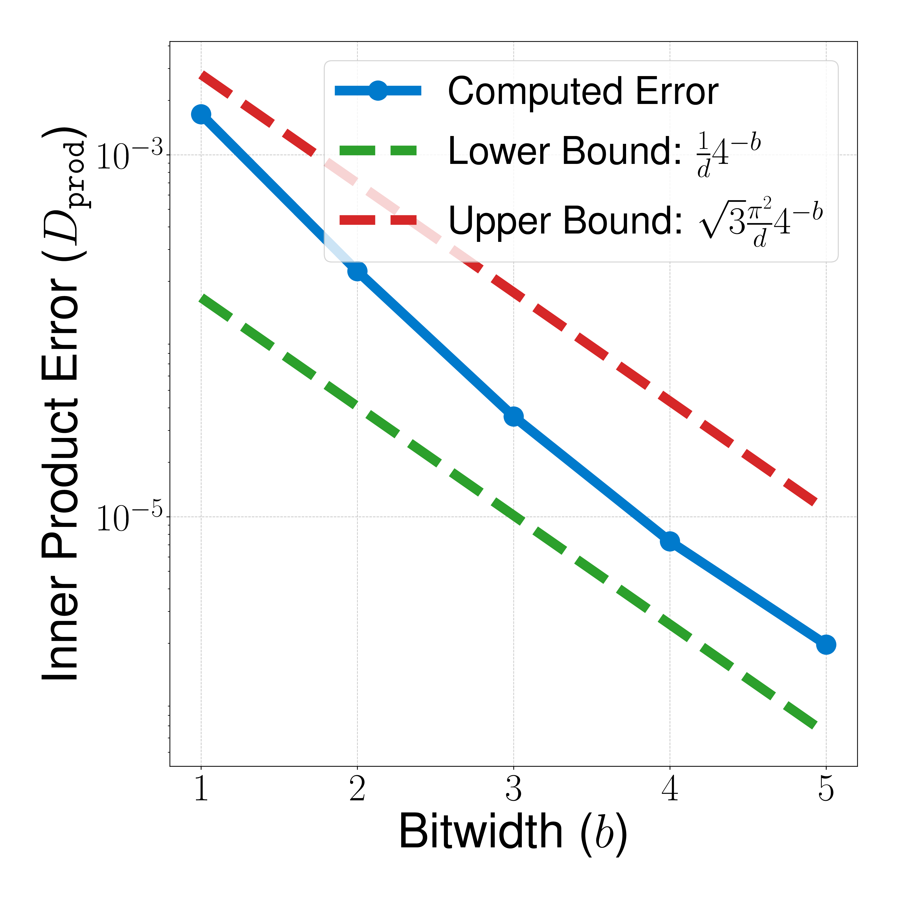
图 2：TurboQuant 在内积失真上的实验结果与理论上下界对比。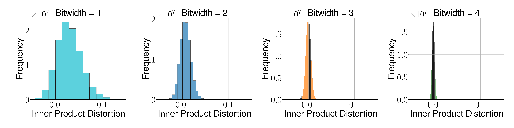
图 3：1536 维嵌入上，两两内积估计误差随量化方法变化的实验结果。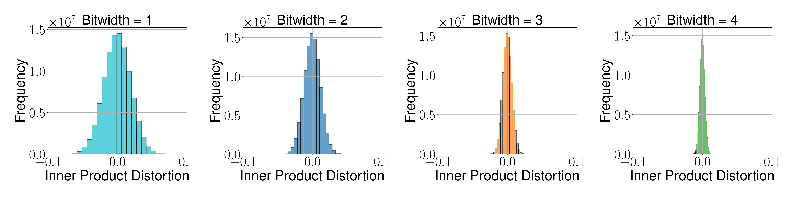
图 4：1536 维嵌入上，无偏版本的两两内积估计误差结果。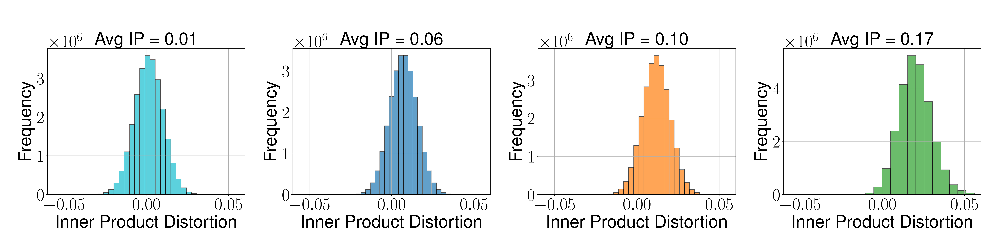
图 5：按不同内积区间分组后的失真表现，展示偏差如何随相似度变化。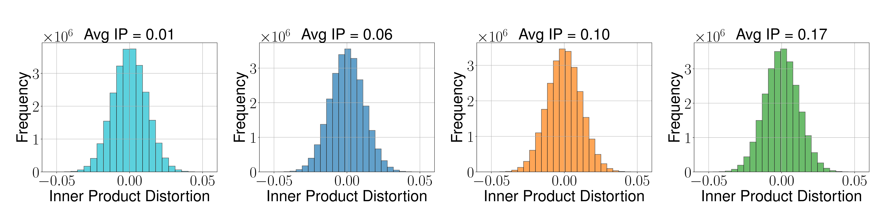
图 6：无偏量化器按内积分组后的失真表现。#4.2. Needle-In-A-Haystack 实验
Needle-In-A-Haystack（NIAH）测试旨在评估模型从长文档中检索特定信息的能力：将一条特定句子（needle）插入长文本（haystack）中的任意位置，然后要求模型把它找出来。
作者按照已有工作设置，使用 Llama-3.1-8B-Instruct，并将上下文长度从 4k 扩展到 104k token。评价指标是召回分数（recall score）。
对比方法包括：
- SnapKV
- PyramidKV
- KIVI
- PolarQuant
- Full Precision
- TurboQuant
所有方法都设置为相同的内存压缩率（0.25，即只保留原始 KV cache 的 25% 内存）。
结果
图中给出的分数为：
- SnapKV：0.858
- PyramidKV：0.895
- KIVI：0.981
- PolarQuant：0.995
- Full-Precision：0.997
- TurboQuant：0.997
结论是：
具有理论保证的量化方法（如 PolarQuant、TurboQuant）明显优于 token 级压缩方法（如 SnapKV、PyramidKV）；
TurboQuant 在 4× 压缩 下仍达到与全精度模型完全相同的表现。
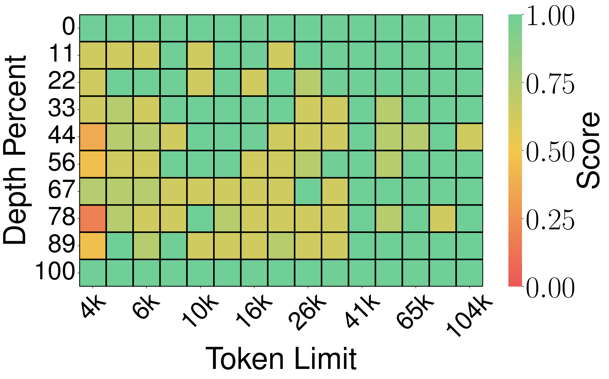
图 7：SnapKV 在 Needle-In-A-Haystack 任务上的结果。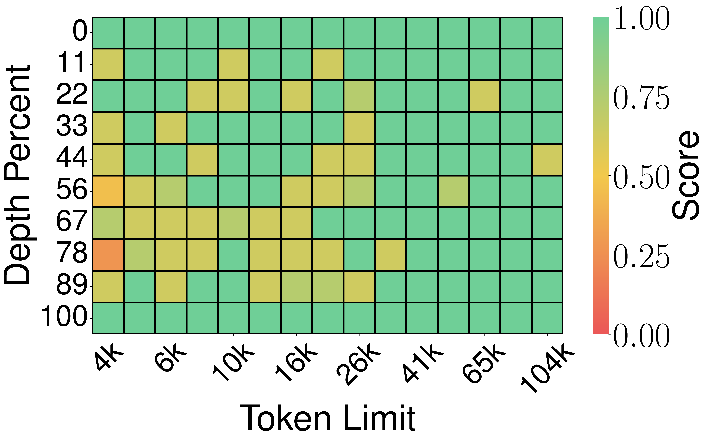
图 8：PyramidKV 在 Needle-In-A-Haystack 任务上的结果。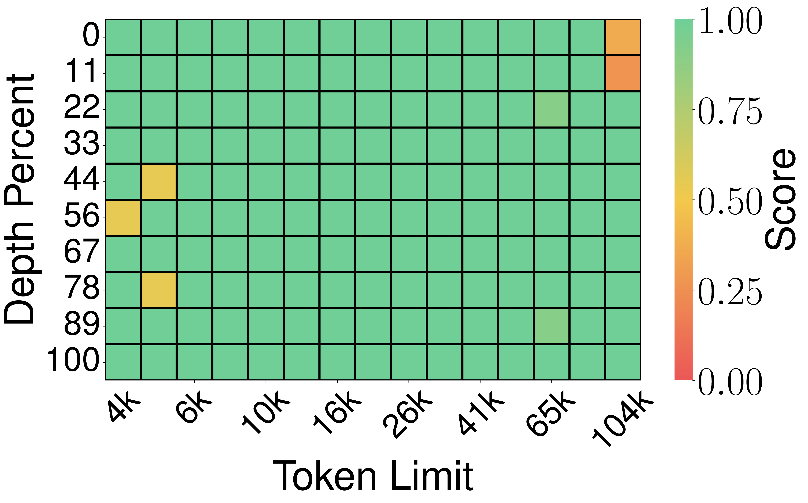
图 9：KIVI 在 Needle-In-A-Haystack 任务上的结果。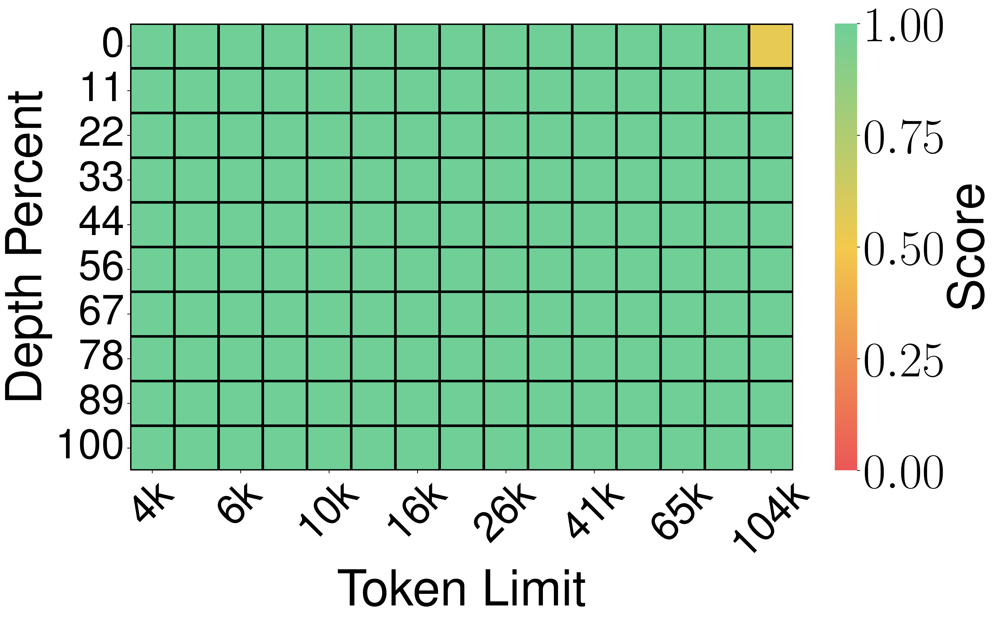
图 10：基于随机投影 / QJL 类方法在 Needle-In-A-Haystack 任务上的结果。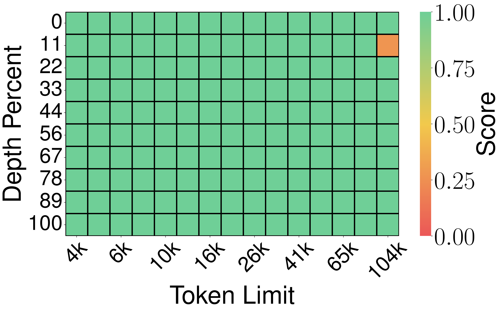
图 11：TurboQuant / 随机旋转量化方案在 Needle-In-A-Haystack 任务上的结果。 图 12：Full-Precision 基线在 Needle-In-A-Haystack 任务上的结果。
图 12：Full-Precision 基线在 Needle-In-A-Haystack 任务上的结果。
#4.3. LongBench 端到端生成实验
作者进一步在 LongBench-E 上测试各种 KV cache 压缩算法。 LongBench-E 是 LongBench 的一个更均衡子集，覆盖：
- 单文档问答
- 多文档问答
- 摘要
- few-shot 学习
- synthetic 任务
- 代码补全
对比模型包括：
- Llama-3.1-8B-Instruct
- Ministral-7B-Instruct
对比方法包括 KIVI、PolarQuant 与 TurboQuant。特别地，现有方法如 KIVI 和 PolarQuant 在生成 token 阶段往往不量化，而作者的方法连生成过程中新增的 token 也会量化。
#4.3.1. 非整数 bit：2.5-bit / 3.5-bit
作者评估了 2.5-bit 和 3.5-bit 两种配置。这里的非整数 bit 来自一种 outlier-aware 设计：
把通道划分为 outlier 通道和普通通道；
对 outlier 分配更高 bit；
对普通通道分配更低 bit；
两者求平均得到有效 bit 宽。
例如在 2.5-bit 配置中：
32 个 outlier 通道使用 3 bit；
96 个普通通道使用 2 bit；
因此平均比特宽度为：
#4.3.2. Llama 结果（表中数据）
#Full Cache（16 bit）
- SingleQA: 45.29
- MultiQA: 45.16
- Summarization: 26.55
- Few-shot: 68.38
- Synthetic: 59.54
- Code: 46.28
- Average: 50.06
#KIVI（3 bit）
- Average: 48.50
#KIVI（5 bit）
- Average: 50.16
#PolarQuant（3.9 bit）
- Average: 49.78
#TurboQuant（2.5 bit）
- Average: 49.44
#TurboQuant（3.5 bit）
- Average: 50.06
这意味着：在 3.5 bit 下，TurboQuant 达到了与 16 bit Full Cache 完全相同的平均分数。
#4.3.3. Ministral 结果
#Full Cache（16 bit）
- Average: 49.89
#TurboQuant（2.5 bit）
- Average: 49.62
也就是说，在大幅压缩 KV 的同时，性能几乎没有下降。
#4.4. Near Neighbour Search Experiments
作者还在近邻搜索任务中评估 TurboQuant 的能力。
#4.4.1. 数据集与设置
使用的数据包括：
- DBpedia Entities（1536 维 OpenAI3 embedding）
- DBpedia Entities（3072 维 OpenAI3 embedding）
- GloVe（200 维）
实验从数据集中随机抽取：
- 100,000 个训练样本
- 1,000 个查询样本（GloVe 使用原始提供的 10,000 查询）
对比方法：
- Product Quantization (PQ)
- RabitQ
- TurboQuant
评价指标为 top-k 召回率，即真实最高内积结果是否出现在近似结果返回的 top-k 中。
#4.4.2. 量化时间比较（4-bit）
论文表格显示，在不同维度下的量化耗时（单位：秒）分别为：
| 方法 | d=200 | d=1536 | d=3072 |
|---|---|---|---|
| Product Quantization | 37.04 | 239.75 | 494.42 |
| RabitQ | 597.25 | 2267.59 | 3957.19 |
| TurboQuant | 0.0007 | 0.0013 | 0.0021 |
这组数字非常夸张，也非常说明问题：TurboQuant 的量化/建索引时间几乎可以视为零。
#4.4.3. 结果分析
PQ 依赖 k-means 构建码本，并且码本大小会随 bit 增大指数增长；
RabitQ 缺乏完全向量化实现，无法有效利用 GPU，因此在 CPU 上速度很慢；
尽管基线方法在实验设定中已获得一定优势，TurboQuant 仍在各项实验中持续取得更高召回率；
这表明 TurboQuant 不仅适用于模型 KV cache 压缩，也适用于高维向量检索。
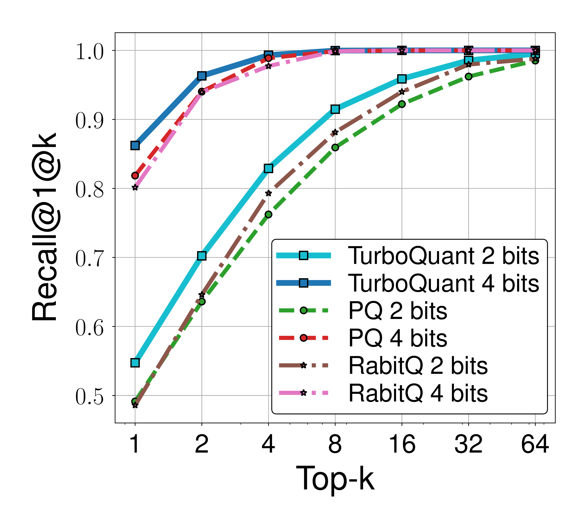
图 13：200 维数据集上的 top-k 召回率对比。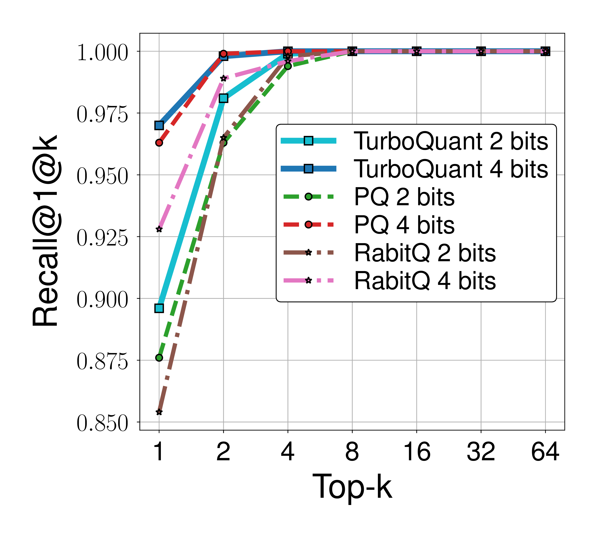
图 14：1536 维数据集上的 top-k 召回率对比。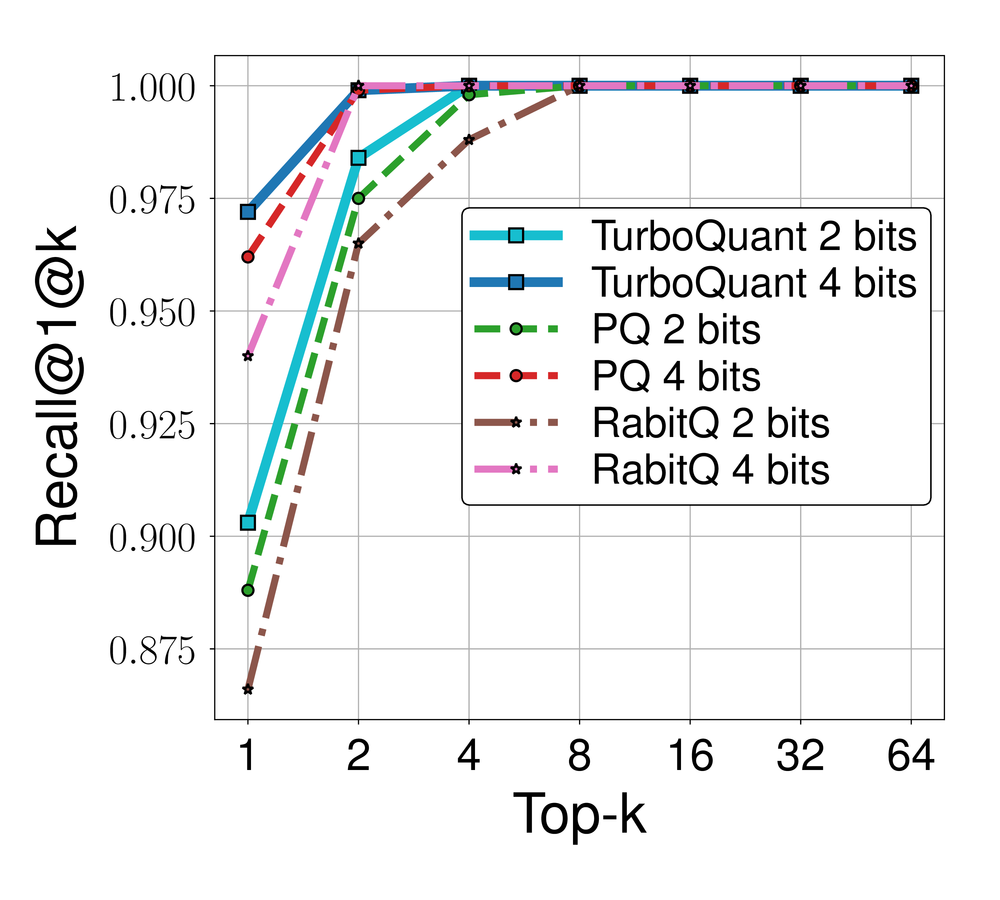
图 15：3072 维数据集上的 top-k 召回率对比。#5. 总结
这篇论文最重要的贡献可以概括为四点：
提出了一种在线、数据无关、硬件友好的向量量化算法 TurboQuant；
在 MSE 与内积失真两种度量下，都给出了接近信息论最优的理论保证；
通过“随机旋转 + 最优标量量化 + QJL 残差补偿”的结构，同时实现了低失真与无偏内积估计；
在 KV cache 压缩与近邻搜索两类关键任务中，都取得了极强的实证效果。
如果从方法论角度看，TurboQuant 的漂亮之处在于：
它没有依赖数据训练；
没有昂贵的离线码本学习；
可以在线直接应用；
理论分析非常完整；
实验结果又确实贴近理论界限。
这使它在 LLM 推理系统、向量数据库、长上下文推理、KV cache 压缩等场景里都很有吸引力。